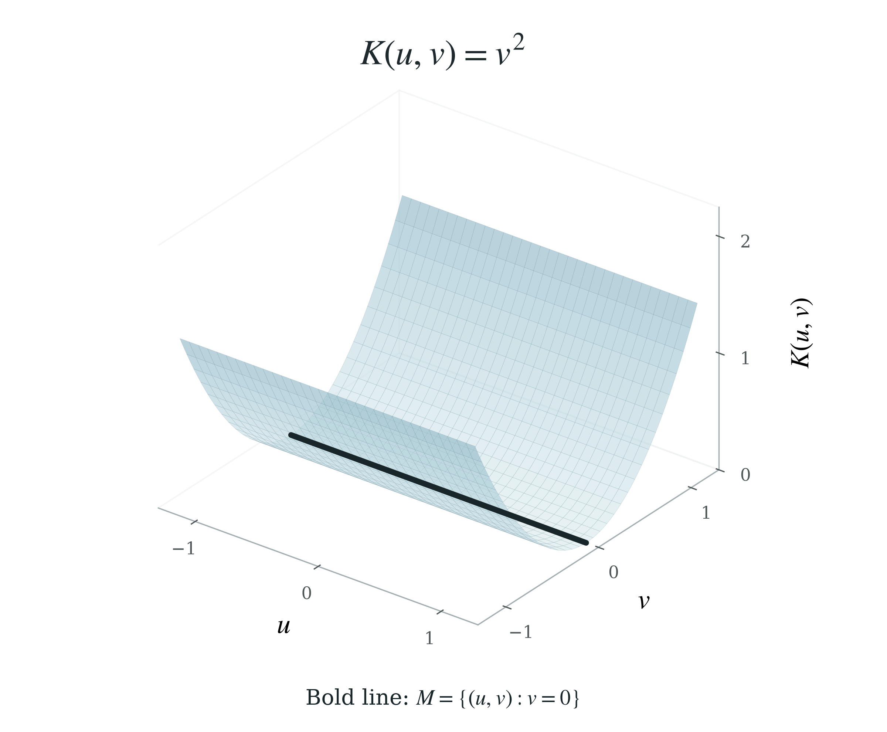
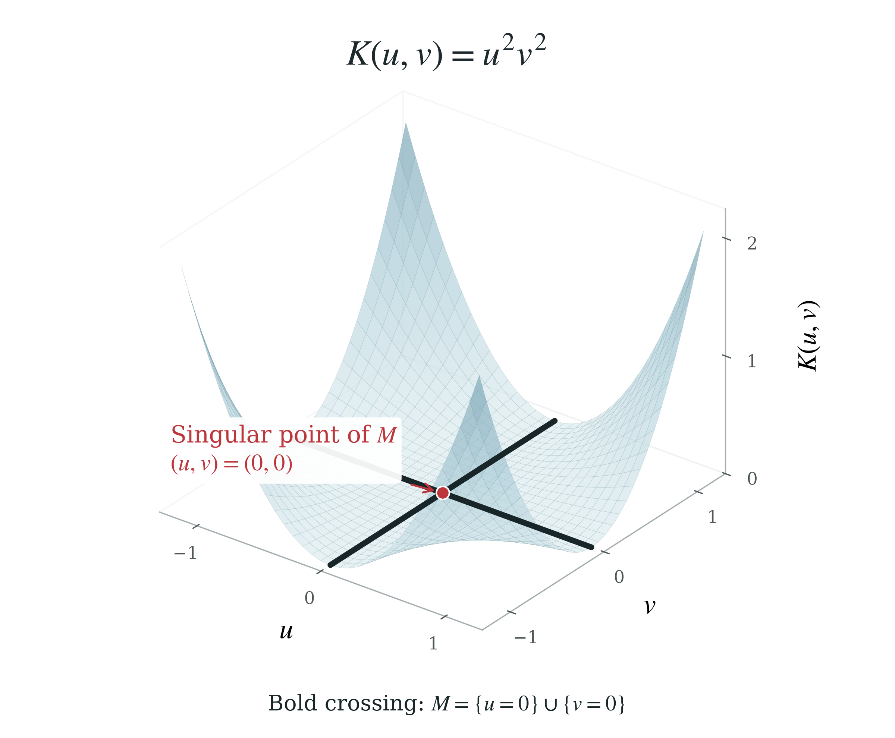
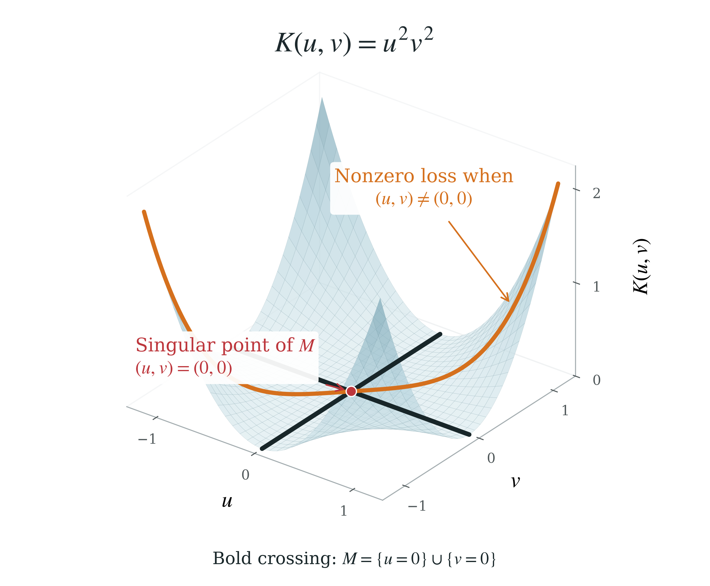
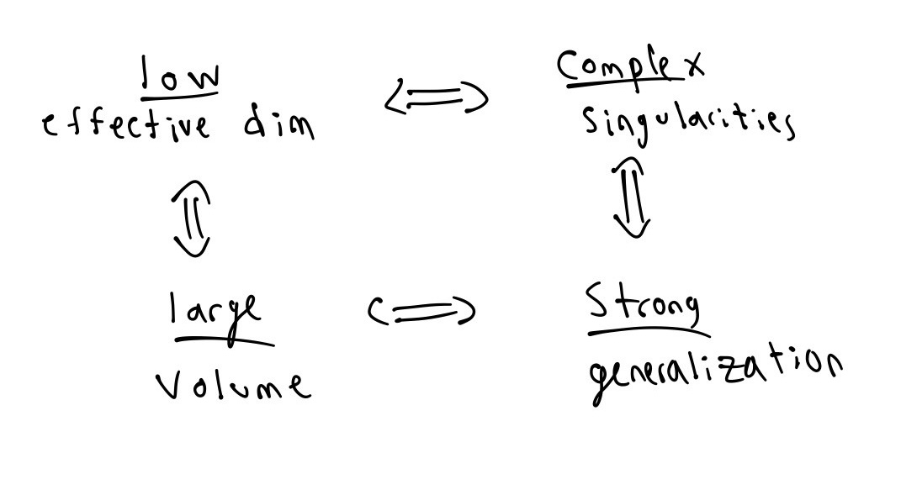

Singular learning theory · 01
What is Singular Learning Theory?
On singularities, effective dimension, and generalization.
Hi, I'm Will! This will be the first in a series of posts about Singular Learning Theory (SLT). As a PhD student studying algebraic geometry with a growing interest in machine learning, SLT has been on my radar as a concrete bridge between the two. I am planning to use this space to work through the subject from the ground up, sharing what I learn and questions I have along the way. I will draw on references including Watanabe's Algebraic Geometry and Statistical Learning (also known as “The Gray Book”), research papers and expository articles on algebraic geometry and neural network theory, and other blogs exploring SLT like this one. I hope these posts will be helpful for anyone else on a similar path. Let's dive in!
The purpose of my writing this first post is to understand, without indulging in too much unnecessary mathematical machinery, what SLT is and why it seems like a reasonable direction for better understanding the science of generalization. For clarity, I will focus on the following two questions which guided much of my preliminary research.
- Why is counting parameters not enough to understand generalization?
- Why might a model with more complex singularities generalize better?
LLMs and deep neural networks are said to be overparametrized in the sense that there are abundant symmetries in the parameter space – that is, different sets of parameters that lead to identical models. 1 For a simple example, consider the function with two parameters This model has one continuous symmetry: replacing with leaves the prediction unchanged for all Classical theory for regular statistical models assumes identifiability (zero symmetries) and nondegenerate local geometry. Under this framework, for instance, adding parameters generally increases opportunities to overfit (harming generalization). But what if these additional parameters belong to a system of symmetries? The goal of SLT is to go beyond these regularity assumptions in an attempt to mathematically quantify and gauge the impact of symmetries (and singularities, as we will soon explore) on generalization.
The starting point of this investigation is to realize that loss basins (the local behavior around local minima of the loss function) are not actually paraboloid-shaped with a unique local minimum. Symmetries in the model parameters create valleys with rivers of constant loss running through them. 2


Let's call such sets of constant loss minimum sets. In the example above, all points belonging to the minimum set are smooth. But it is possible for a minimum set to have singularities if these rivers intersect.


The slogan of SLT is that “the more complex these singularities are, the lower the effective dimension of the model.”3 The meaning of this phrase, or the intuition behind it, was not clear to me when I first encountered it. And so I would like to propose two ways for thinking about effective dimension which will lead us to understanding the relationship between singularities, effective dimension, and generalization.
An informal approach.
Suppose the minimum set is locally a smooth manifold in a -dimensional parameter space. Its codimension counts the independent directions transverse to it:
Thus, for a fixed parameter dimension, a higher-dimensional smooth minimum set has fewer transverse directions. This might make us consider defining the effective dimension at a point to be precisely But SLT doesn't just care about the dimension of the minimum set; it cares about singularities. And this notion of codimension becomes less useful at singular points. Consider , whose minimum set is the union of the coordinate axes (Figure 2). At the origin, moving along either coordinate axis preserves zero loss, but combining those directions need not: moving along the diagonal leaves the minimum set (Figure 3). The two independent zero-loss directions therefore do not form a two-dimensional region of minima – and it would be incorrect to claim that the transverse dimension was there. 4


A more formal approach toward the RLCT.
Instead of counting exactly-flat directions, we can look at integrating over the parameter space. Let be a singularity on a minimum set, and fix an open neighborhood of (Importantly, we do not require that Now we may fix some and ask: what is the volume of the set:
where is our loss function. 5 And furthermore: how quickly does shrink as ? For a fixed tolerance , a larger volume means that more nearby parameter settings achieve nearly minimal loss. The mathematical machinery of SLT will also lead us to determine that the more “complex” a singularity is, the larger the volume (and the slower the rate of decay). The picture below gives some intuition.

On the topic of generalization, we might expect a higher-volume, more “complex” singularity to generalize better because it is more robust to slight parameter changes. Perhaps this “robustness” hints at some kind of “deeper truth” that the model has discovered. More concretely, we can apply the techniques of Bayesian SLT to connect the volume rate of decay to Bayesian learning and generalization. Defining a true(r) notion of effective dimension (which will be called the RLCT) is also downstream of this. To summarize what we've learned (again at an intuitive level, with serious technical qualifiers), we have the following.


Notes
- One might also define overparametrization to suggest that the model may be similarly performant with far fewer parameters. This definition makes the claim that LLMs are overparametrized more debatable, although still likely true. See, for instance: Thennal D K, Tim Fischer, and Chris Biemann, Large Language Models Are Overparameterized Text Encoders, arXiv:2410.14578 (2024).↩
- This analogy appears common and used by both My Criticism of Singular Learning Theory, and Neural networks generalize because of this one weird trick, LessWrong (2023).↩
- Jesse Hoogland, Neural networks generalize because of this one weird trick, LessWrong (2023), Neural networks generalize because of this one weird trick.↩
- The article My Criticism of Singular Learning Theory is a little sloppy in making a similar, incorrect, argument about what they call “effective parameter dimension.”↩
- Really, we also want that for all as well.↩